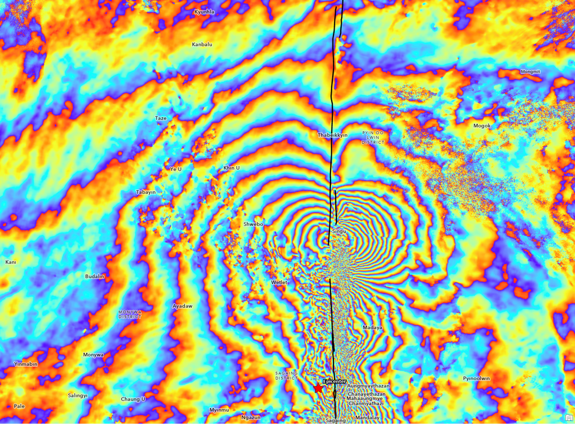

Methods · 01 / 03
InSAR
REGIONAL SCALE · Interferometric Synthetic Aperture Radar
Measuring how the ground moves by comparing the phase of radar images taken from space at different times.
Measuring how the ground moves by comparing the phase of radar images taken from space at different times.
A radar satellite doesn't take a photo — it records the phase of the microwave signal that bounces back from the ground. If the ground moves even a few millimetres between two passes, that phase changes in a measurable way.
InSAR (Interferometric Synthetic Aperture Radar) turns that idea into maps. By differencing two radar acquisitions over the same area, it recovers ground motion along the satellite's line of sight — across millions of points at once, with no instruments on the ground.
The radar measures the change in range — the distance between the satellite and the ground — projected onto its slanted viewing direction. That means a single track sees a mix of vertical and horizontal motion, not pure subsidence.
To separate the two, you combine ascending and descending passes, which view the same ground from opposite sides. Where they overlap, you can decompose the signal into vertical and east–west components.
The phase difference between two acquisitions wraps around every half-wavelength of motion. Plotted as colour, that produces fringes — each full colour cycle is a fixed amount of ground displacement.
For Sentinel-1's C-band radar (wavelength ≈ 5.6 cm), one fringe equals about 2.8 cm of line-of-sight motion. Unwrapping the fringes and stacking many acquisitions over time yields velocities at the millimetre-per-year level.

My work builds time series from Sentinel-1, ALOS-2/PALSAR-2, and recent satellites like PALSAR-3 and NISAR. It applys SBAS InSAR to map vertical land motion across diverse study areas, including coal-measure basins, coastal reclaimed land, urban karst terrain, and conflict-affected cities. Each sensor brings a different wavelength and revisit cadence, which matters when coherence is the limiting factor.
To make the relative InSAR field trustworthy I tie velocities to known reference locations — corner reflectors and continuous GNSS stations where they exist, and to LiDAR-derived elevation change in areas where no GPS infrastructure is available. This multi-anchor approach is what keeps the displacement field stable over large extents and long time spans.
A recurring theme across all of these sites is how calibration quality decays with distance from the reference point, and how coherence governs the agreement between ascending and descending tracks. Low coherence in one geometry inflates the apparent difference between the two tracks, mimicking a real deformation signal when it is primarily phase noise. Consequently, stratifying by coherence before comparing tracks has become a standard step in my processing chain.
The work on sinkholes in St. Louis adds another layer: InSAR is sensitive enough to detect the slow precursor deformation that precedes a collapse, but the challenge is distinguishing a genuine subsurface void signal from decorrelation caused by surface change. Resolving this issue requires both careful reference-frame design and, ideally, data fusion with LiDAR or ground-penetrating radar.